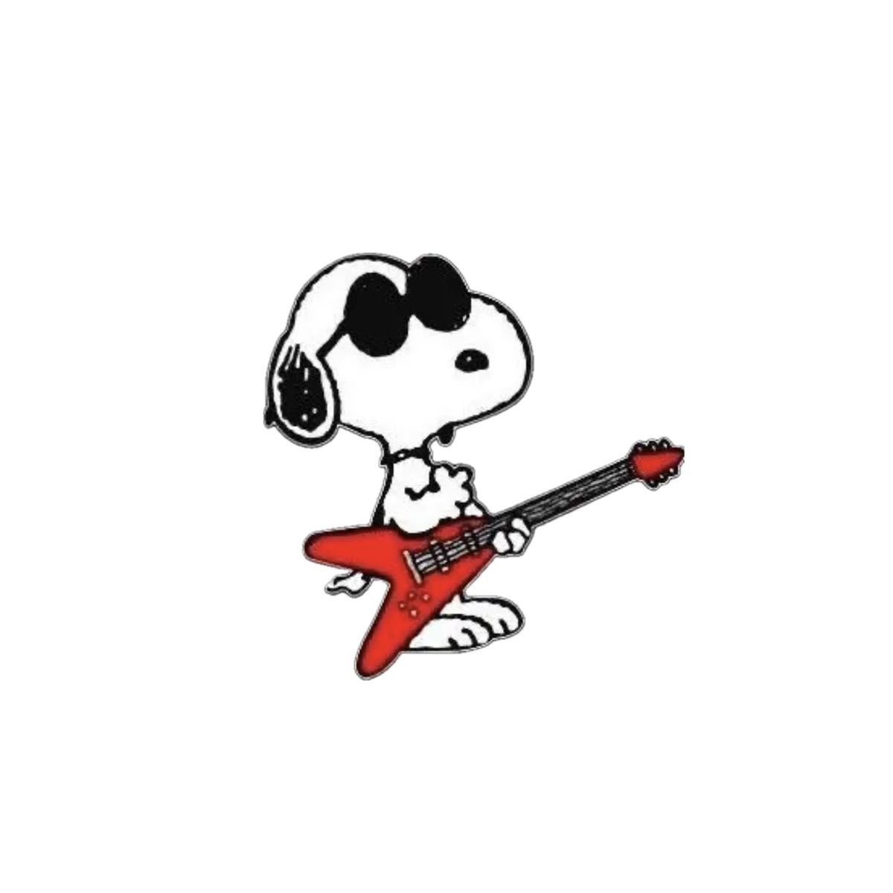
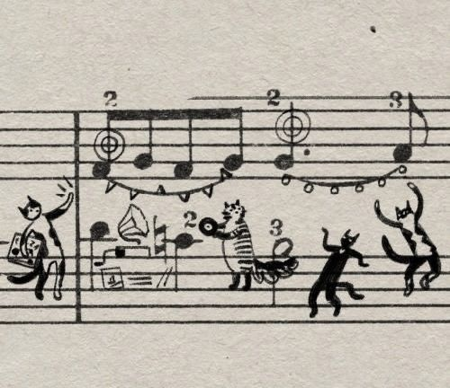
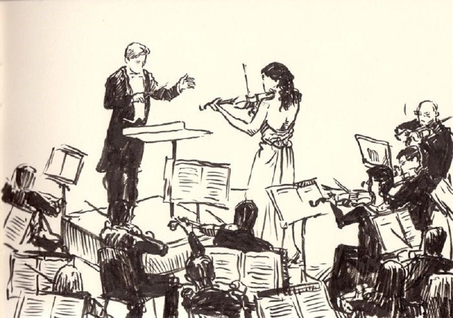
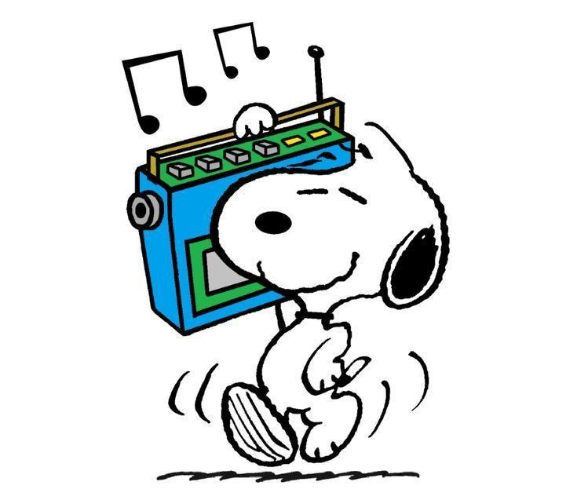
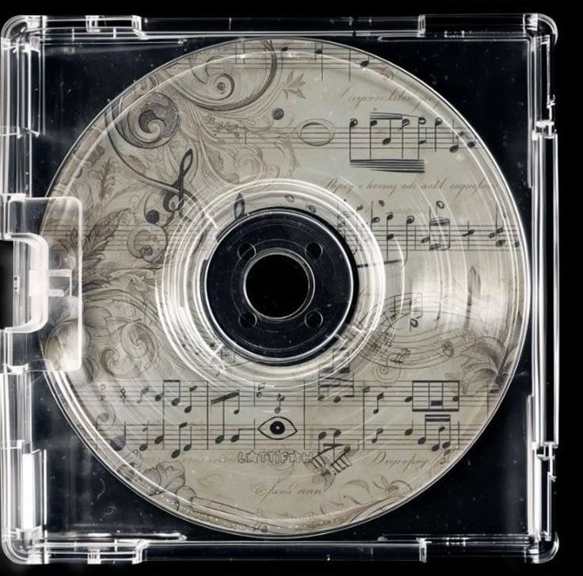
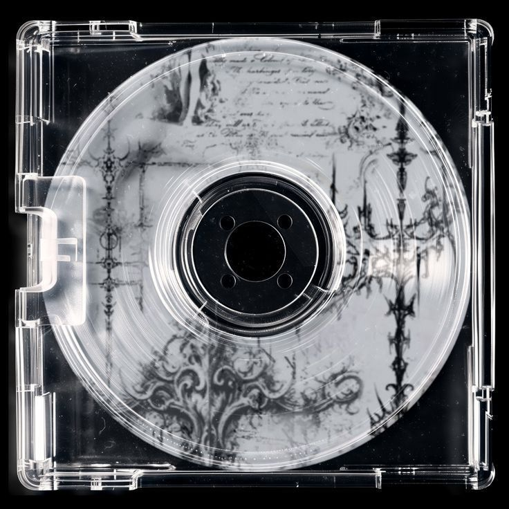

Rock Classics

From Led Zeppelin’s thunderous riffs to Queen’s stadium anthems, rock classics never go out of style. Explore the tracks that defined generations and still inspire today’s bands.
Jazz Legends

Step into the world of Miles Davis, Ella Fitzgerald, and John Coltrane — legends whose improvisation and artistry set the standard for jazz across the globe.
Gallery 1

Snapshots from live shows — capturing the raw energy and connection between artists and fans.
Gallery 2

A behind-the-scenes look at recording sessions where creativity comes to life.
Gallery 3
Festival vibes — from colorful crowds to unforgettable performances under the stars.
Hip-Hop Vibes
Discover the beats and rhymes that tell stories of resilience, identity, and culture. From old-school pioneers to modern icons, hip-hop continues to evolve and inspire.
EDM Hits

Feel the drop with today’s biggest EDM hits. Whether it’s house, trance, or dubstep, these tracks are guaranteed to get you moving.
Gallery 4

Iconic album covers that became works of art in their own right.
Gallery 5

Fan-submitted artwork and photography celebrating music in all forms.